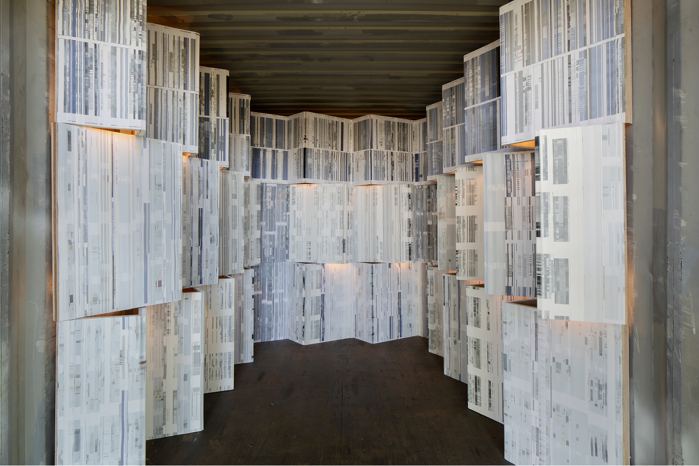
The search for the innovation or representativeness of the new is an exercise inherent to organizing a Biennial of Contemporary Art. We live in a time of indecision and temporal dissonance, which behoves us to rethink the way of accessing contents or information. The new is anchored in the past and in history, which demands reconstruction and scrutiny to bring forth innovation, as proposed by Boris Groys. Through reinterpretation or the referent, and the exercise of re-contextualization, it is possible to examine novelty, taking into account that novelty is no longer a post-modern exercise in François Lyotard's definition.
The anxiety of the new is inherent in all of us. It is a pulsating energy leading us to quest and search for referents to shape our personality and traits. We all seek to know about any sort of novelty by visiting museums, reading books, attending concerts, etc… the outcome of this search for novelty has brought about an alteration of aesthetical and social values.
We went from being individuals to being users, hostages and fanatics of the scroll and the device notification. We inhabit the ruin of the notion of our own context, of that which defines our action and thought, and we have become disoriented in the face of stimuli. The anxiety of the new is inherent to research. It allows us to reference and create innovation, or at least to re-contextualize it. The Internet 'as we know it' has substantially altered the paradigm of our lexicon of references as it became the container of 'all information' given its free accessibility, which punctuates our existence as 'free access, free ware, free love, free will’ – a consequence of the hyperworld.
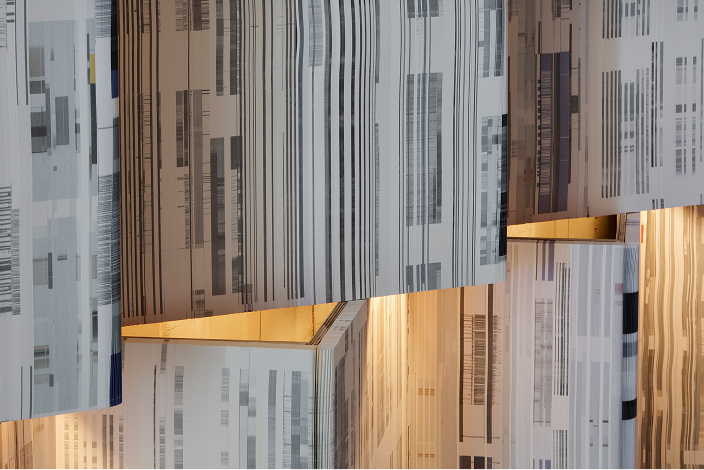
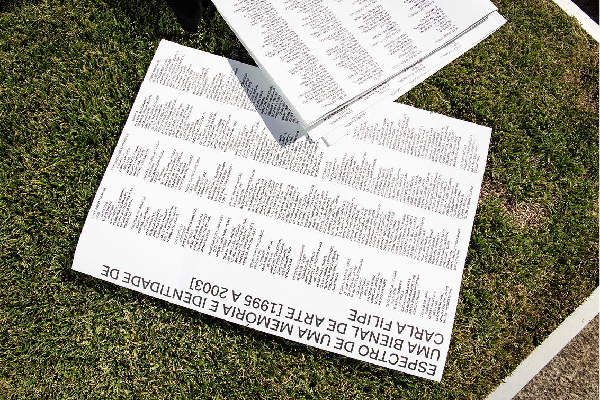
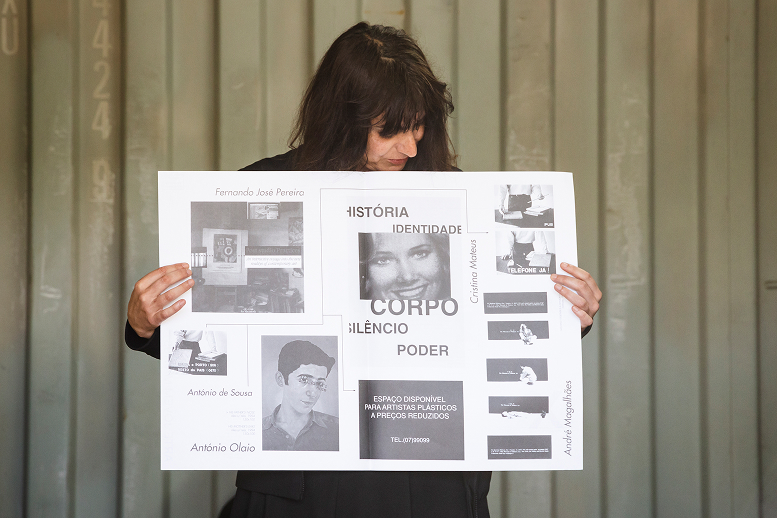
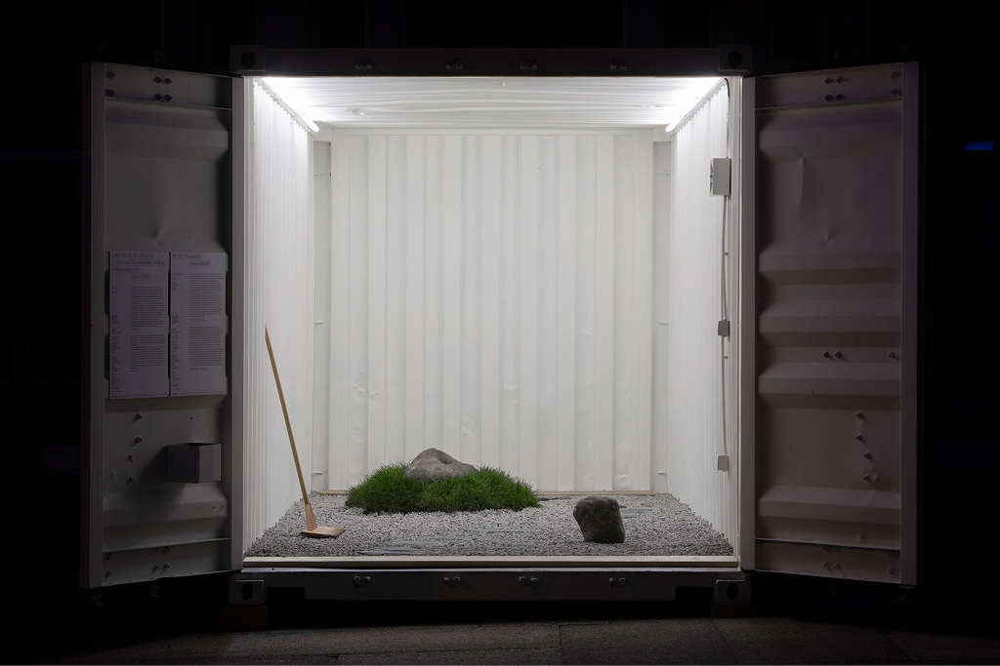
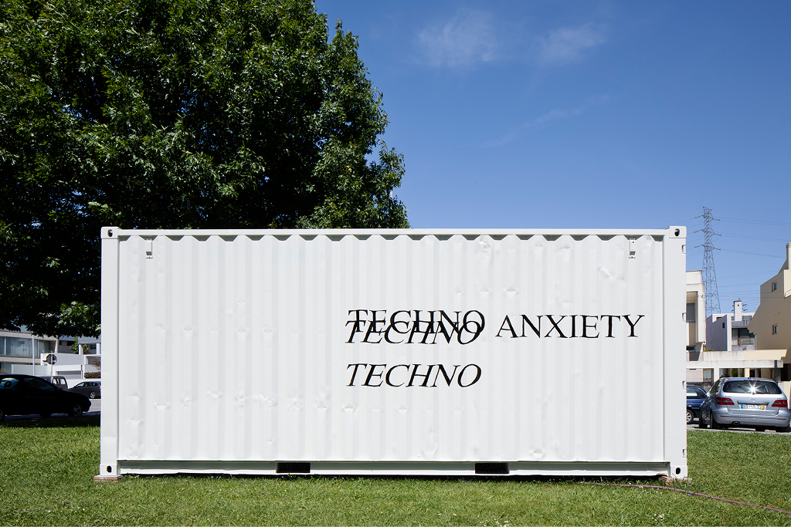
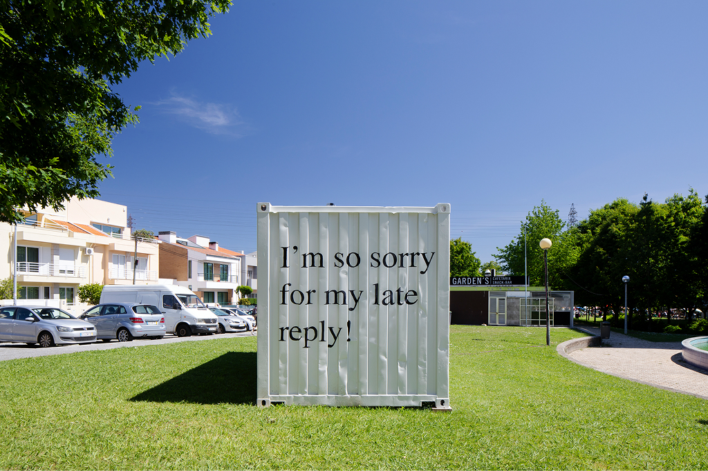
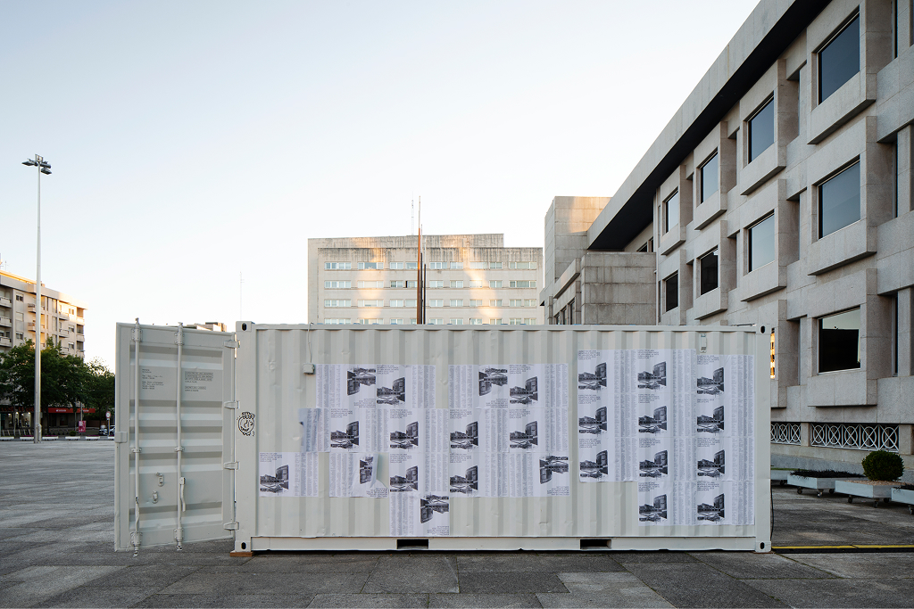
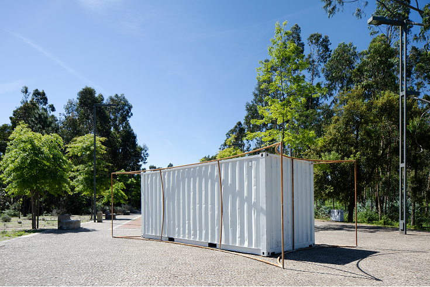
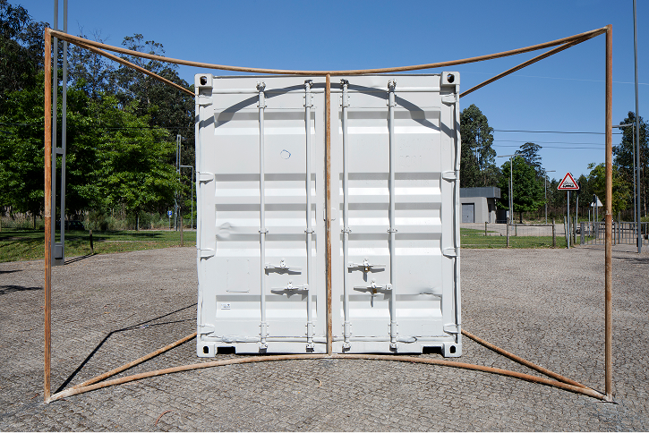
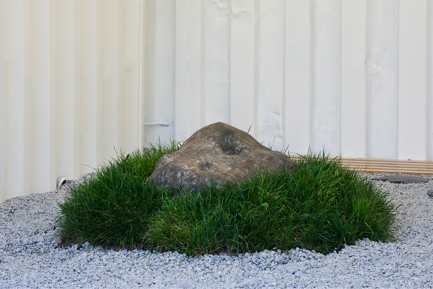
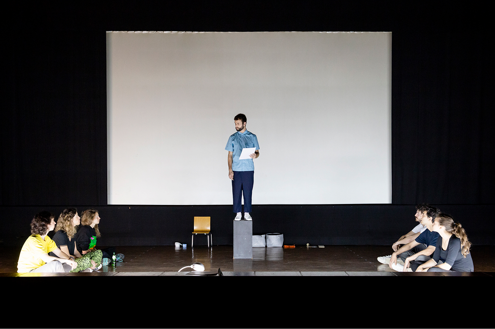
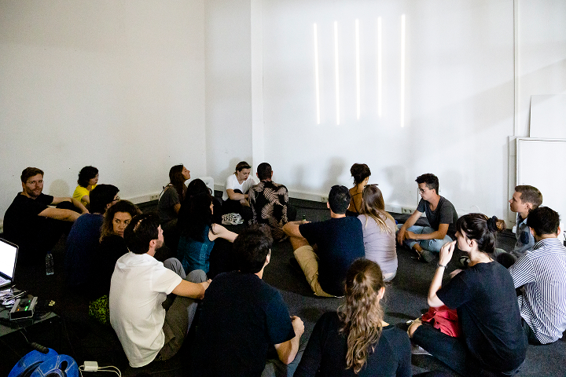
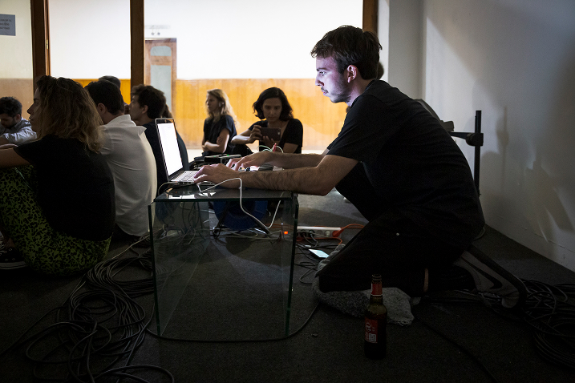
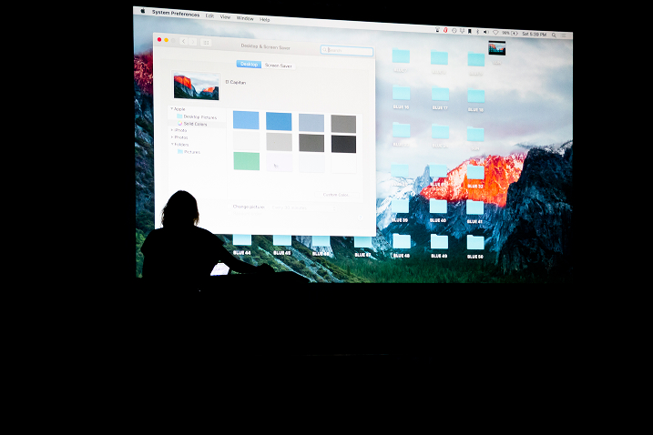
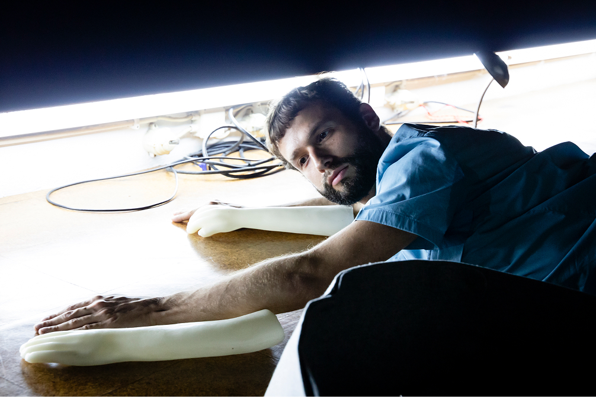
Maia
11.5 – 27.7.2019
Maia City Hall
Andreia Garcia
Architectural Affairs
Andreia Garcia
GLC Química,
Gráfica Maiadouro,
ReUrban
Luís Pinto Nunes,
Luís Albuquerque Pinho
And Atelier
Paola Rodrigues
Tiago Casanova,
Rita França
Bryana Fritz,
Carla Filipe,
Carlos Azeredo Mesquita,
Dayana Lucas,
Francisco Oliveira,
Horácio Frutuoso,
Mafalda Santos,
Manuel Mesquita,
Sara & André,
Tiago Alexandre
Pedro Ruiz,
Paola Rodrigues